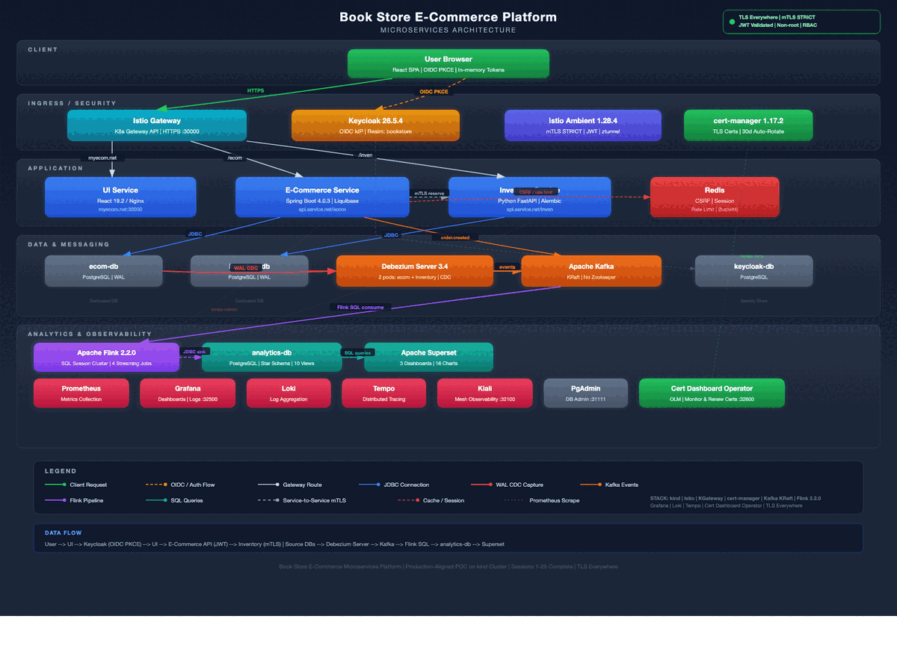

BookStore Platform
Production-grade microservices e-commerce bookstore on Kubernetes
Infrastructure Architecture

Architecture at a Glance
| Layer | Components | Technology |
|---|---|---|
| Client | Single-page application, OIDC login | React 19.2 + Vite, PKCE (S256) |
| Ingress / Security | Gateway routing, TLS termination, mTLS mesh, JWT validation | Istio Ambient 1.28.4, K8s Gateway API, cert-manager 1.17.2 |
| Application Services | E-Commerce API, Inventory API, Admin API | Spring Boot 4.0.3, FastAPI |
| Identity | OIDC provider, RBAC, realm management | Keycloak 26.5.4 |
| Data & Messaging | 4 isolated databases, event streaming, CDC | PostgreSQL, Kafka KRaft, Debezium Server 3.4 |
| Analytics & BI | Stream processing, star schema, dashboards | Flink 2.2.0 SQL, Superset (3 dashboards, 16 charts) |
| Observability | Metrics, tracing, logs, service mesh visualization, DB admin | Prometheus, Grafana, Loki, Tempo, OTel Collector, Kiali, PgAdmin |
| Operations | Certificate monitoring, renewal dashboard, operator lifecycle | Cert Dashboard Operator (OLM), cert-manager 1.17.2 |
Key Architecture Decisions
TLS / Certificate Management
All external-facing endpoints serve HTTPS via a self-signed CA managed by cert-manager v1.17.2. A single multi-SAN certificate covers all hostnames. TLS terminates at the Istio Gateway (HTTPS :30000). Certificates auto-rotate every 30 days. HTTP→HTTPS redirect on port 30080 (301).
Service Mesh & Zero Trust
Istio Ambient Mesh provides mutual TLS across all service-to-service communication without sidecar proxy overhead. ztunnel handles L4 encryption transparently. AuthorizationPolicies operate at L4 only (namespace + SPIFFE principal), compatible with the sidecar-free ambient model. JWT validation occurs independently at every backend service — no service trusts upstream claims.
Authentication & Authorization
Keycloak 26.5.4 as OIDC Identity Provider. Authorization Code Flow with PKCE (S256). Tokens stored in memory only — never in localStorage. Back-channel logout via POST (no Keycloak redirect). Role-based access: customer vs admin realm roles.
Event-Driven Architecture
Two Debezium Server 3.4 pods capture PostgreSQL WAL changes into Kafka topics. Apache Flink 2.2.0 runs four streaming SQL jobs with exactly-once semantics, transforming CDC events into a star schema. Kafka runs in KRaft mode (no Zookeeper).
Data Architecture
Strict database-per-service isolation: four PostgreSQL instances with no cross-database access. Schema migrations run as Kubernetes init containers (Liquibase for Java, Alembic for Python). Star schema in analytics-db with fact tables, dimension tables, and 10 views powering Superset dashboards.
API Design
RESTful APIs built with Spring Boot 4.0.3 (Java) and FastAPI (Python). Kubernetes Gateway API handles all ingress routing via HTTPRoutes — no Ingress resources. Rate limiting uses Bucket4j backed by Redis. CSRF tokens stored server-side in Redis.
Observability Stack
Prometheus scrapes Istio telemetry (istiod + ztunnel) and application metrics. Grafana provides unified dashboards with Loki (logs) and Tempo (traces) backends. OTel Collector routes telemetry from services. Kiali provides real-time service mesh topology visualization. Apache Superset delivers business analytics across three dashboards with 16 charts.
Certificate Operations
The cert-dashboard-operator is a Go-based Kubernetes operator (OLM-managed) that deploys a web dashboard for monitoring and renewing cert-manager certificates. It displays certificate lifecycle with color-coded progress bars, provides one-click renewal with SSE live streaming, and auto-refreshes every 30 seconds. Accessible at NodePort 32600.
Live Data Flow

User Request Flow
Browser (HTTPS) → Istio Gateway (TLS termination) → UI Service (React SPA)
Browser (HTTPS) → Keycloak (OIDC PKCE login)
UI → E-Commerce API (JWT-protected)
E-Commerce → Inventory Service (service-to-service mTLS)CDC Pipeline
Source DBs → Debezium Server 3.4 → Kafka → Flink 2.2.0 SQL → analytics-db → SupersetCheckout Flow
- User submits checkout — E-Commerce Service validates cart and JWT
- E-Commerce calls Inventory Service over mTLS to reserve stock
- Order persisted;
order.createdevent published to Kafka - Debezium captures DB change → Kafka → Flink transforms → analytics-db
- Superset dashboards reflect new order data in real time
Security Invariants
- All external traffic encrypted via TLS (HTTPS on port 30000, cert-manager auto-rotation)
- All inter-service traffic encrypted via Istio mTLS (STRICT mode)
- JWT validated independently at every backend service
- Non-root containers with read-only root filesystems and all capabilities dropped
- Secrets managed exclusively through Kubernetes Secrets (no hardcoded config)
- NetworkPolicies enforced per namespace
- CSRF tokens stored server-side in Redis
- HTTP→HTTPS redirect on port 30080 (301 Moved Permanently)
Test Coverage
- E2E tests via Playwright (all passing)
- TLS/cert-manager E2E tests: certificate chain, SANs, rotation, HTTPS connectivity
- Unit tests for both backend services (JUnit, pytest)
- CDC pipeline verification: insert → poll analytics DB within 30s
- Smoke tests covering pods, HTTPS routes, Kafka, and Debezium health
Technology Stack
| Category | Technology | Version |
|---|---|---|
| Frontend | React + Vite | 19.2 |
| Backend (Java) | Spring Boot | 4.0.3 |
| Backend (Python) | FastAPI | latest |
| Identity | Keycloak | 26.5.4 |
| Service Mesh | Istio Ambient | 1.28.4 |
| Gateway | Kubernetes Gateway API | istio |
| Databases | PostgreSQL | 4 instances |
| Messaging | Apache Kafka | KRaft mode |
| CDC | Debezium Server | 3.4.1 |
| Stream Processing | Apache Flink | 2.2.0 |
| BI / Analytics | Apache Superset | latest |
| Certificate Management | cert-manager | 1.17.2 |
| Observability | Prometheus, Grafana, Loki, Tempo, Kiali | — |
| Telemetry Pipeline | OpenTelemetry Collector | — |
| Cert Operations | Cert Dashboard Operator (Go, OLM) | v0.0.1 |
| Cache / Sessions | Redis | — |
| E2E Testing | Playwright | latest |
| Container Orchestration | Kubernetes (kind) | — |
Documentation
Technical Reference Manual v1.0
Complete 13-chapter professional manual — platform overview, user guide, admin panel, analytics, monitoring, security architecture, API reference, operations, and troubleshooting. All in one document.
Quick User Guide
Focused step-by-step walkthrough with screenshots and credentials for each dashboard and interface.
Comprehensive Enhancement Report
Full analysis of all 35 sessions — why each enhancement produces the best outcome, with detailed before/after comparisons and architecture quality scorecard.
Architecture Deep Dive
Security layers, reliability, resiliency, observability, 15-Factor App compliance, and architecture scorecard.
PostgreSQL HA with CloudNativePG
High availability, automatic failover, Debezium CDC from WAL, Kafka offset storage, and AWS RDS/Aurora migration guide.
CDC Pipeline Hardening
Production-grade CDC improvements: Flink restart resilience, Kafka idempotency, consumer lag monitoring, Prometheus metrics, and alert rules.
Schema Registry Guide
Confluent Schema Registry with JSON Schemas for all 6 CDC and application Kafka topics. Versioning, BACKWARD compatibility, and manual testing guide.
Sessions 30-33: Architecture Hardening
Security, resilience, and observability hardening. Circuit breaker, rate limiting, DLQ, HPA, PDB, JWT audience, NetworkPolicies, and 55 new E2E tests.
Sessions 34-35: Infrastructure & Ops
Kafka/Redis production configs, ResourceQuota, checkout idempotency, Swagger disable, backup/restore, developer documentation.
GitHub Repository
Source code, infrastructure manifests, E2E tests, and CI/CD pipelines for the BookStore platform.
Architecture Summary (Gist)
Concise architecture overview covering microservices, data flow, security model, and deployment topology.